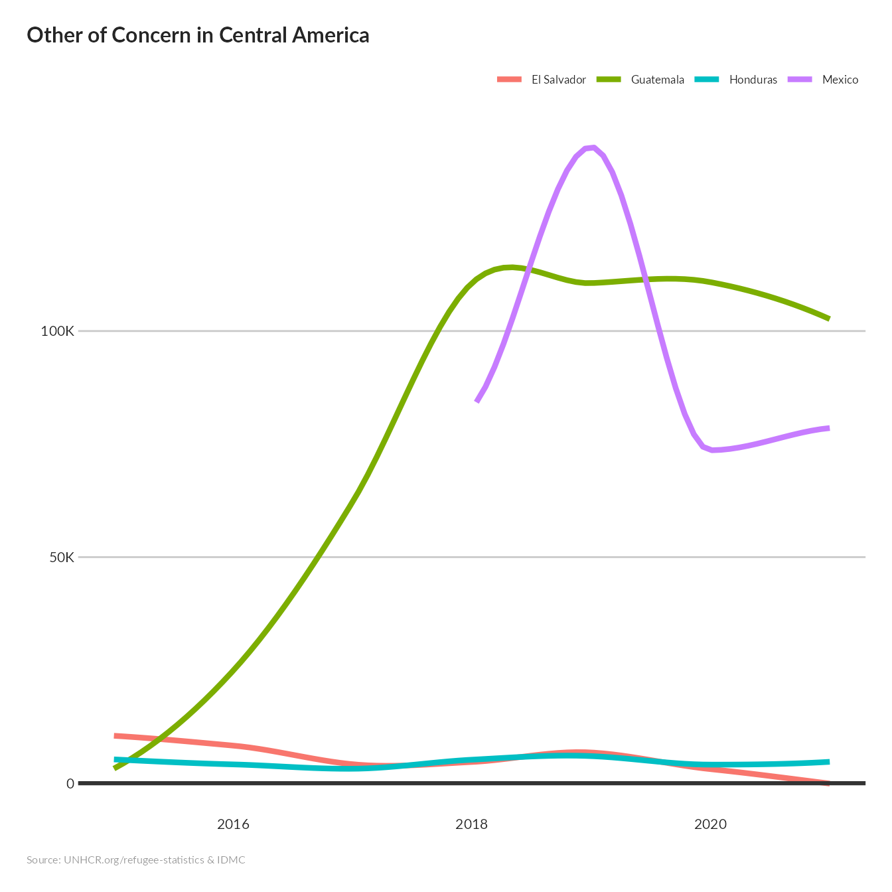

vignettes/Smootheed_Evolution_over_time.Rmd
Smootheed_Evolution_over_time.RmdThe map is presented with the Bertin 1953 projection
thisbureau <- "Americas"
lastyear <- max(unhcrdatapackage::end_year_population_totals_long$Year)
end_year_population_totals_long.asy <- dplyr::left_join( x= unhcrdatapackage::end_year_population_totals_long,
y= unhcrdatapackage::reference,
by = c("CountryAsylumCode" = "iso_3"))
ooc_central <- end_year_population_totals_long.asy[end_year_population_totals_long.asy$CountryAsylumCode %in% c("GTM", "SLV", "HND", "MEX") &
end_year_population_totals_long.asy$Population.type =="OOC" ,
c("CountryAsylumCode","CountryAsylumName", "Year", "Value") ] %>%
group_by(Year, CountryAsylumCode, CountryAsylumName ) %>%
summarise(Value = sum(Value) )
#> `summarise()` has grouped output by 'Year', 'CountryAsylumCode'. You can override using the `.groups` argument.
ooc_centralplot <- ggplot(ooc_central,
aes(x=Year,
y=Value,
color=CountryAsylumName)) +
# linetype=CountryAsylumName)) +
stat_smooth(size=1.5,
method = "loess",
level = 0.95,
fullrange = TRUE,
se = FALSE) +
# scale_color_manual(values=c(IDMC="orange",
# UNHCR="sienna" )) +
scale_y_continuous( label = unhcRstyle::format_si()) + ## Format axis number
geom_hline(yintercept = 0, size = 1.1, colour = "#333333") +
unhcRstyle::unhcr_theme(base_size = 8) + ## Insert UNHCR Style
theme(#legend.position = "none"
panel.grid.major.y = element_line(color = "#cbcbcb"),
panel.grid.major.x = element_blank(),
panel.grid.minor = element_blank() ) +
## and the chart labels
labs(title = "Other of Concern in Central America ",
# subtitle = "",
x = "",
y = "",
caption = "Source: UNHCR.org/refugee-statistics & IDMC ")
ooc_centralplot